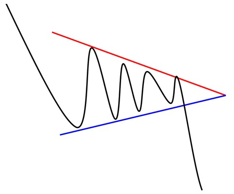

- Figures chartistes : Le Triangle symétrique -
Le triangle symétrique est une figure chartiste de continuation. La figure est formée par deux droites de tendance convergentes symétriques par rapport à l'horizontale.
L'objectif de cours d'un triangle symétrique est déterminé par la hauteur de la base du triangle reportée au point de cassure.
Validité :
Le triangle symétrique est confirmé/valide si il a bien oscillation entre les deux droites.
Chacune de ces droites doit avoir été touchées au minimum 2 fois pour valider la figure.
NB : une ligne est dite "valide" si le cours la touche au moins 3 fois en support ou en résistance.
Triangle symétrique de sommet
Triangle symétrique de creux

63% la sortie du triangle symétrique de sommet est haussière.
89% le mouvement haussier se poursuit après sortie du triangle.
81% le cours parvient à atteindre l'objectif de cours du triangle en cas de sortie par le haut.
60% le cours effectue un pullback en support sur la ligne de résistance du triangle.
16% le cours effectue de fausses cassures des lignes de support/résistance (fausses sorties du triangle symétrique de sommet).
57% la sortie du triangle symétrique de creux est baissière.
91% le mouvement baissier se poursuit après sortie du triangle.
57% le cours parvient à atteindre l'objectif de cours du triangle en cas de sortie par le bas.
60% le cours effectue un pullback en résistance sur la ligne de support du triangle.
16% le cours effectue de fausses cassures des lignes de support/résistance (fausses sorties du triangle symétrique de creux).
- La sortie du triangle symétrique s'effectue le plus souvent vers 80% de la figure.
- Les cassures/sorties franches et puissantes donnent de meilleures performances.
- La performance est meilleure lorsque le triangle symétrique se forme au début d'une tendance.
- Eviter de prendre position si la cassure/sortie intervient avant les 3/4 du triangle.
- Les pullbacks sont néfastes pour la performance.